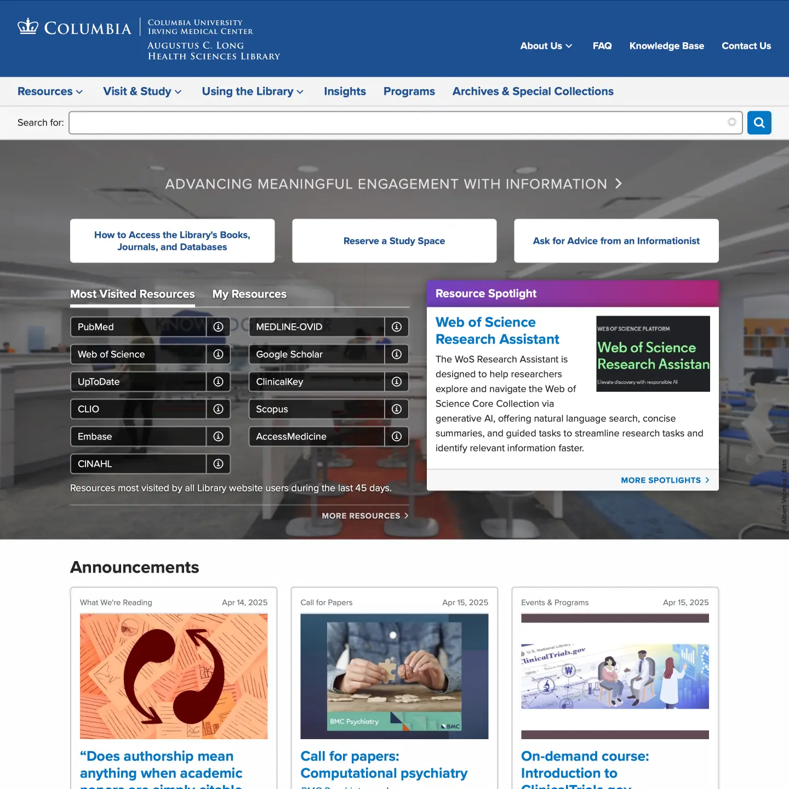

The Augustus C. Long Health Sciences Library
The Augustus C. Long Health Sciences Library provides access to research resources, research assistance, and information management education for the students and staff of Columbia University Irving Medical Center (CUIMC) and the clinical staff of NewYork-Presbyterian Hospital.
Web Design
The Library website design embraces the CUIMC brand and basic web design conventions while retaining a unique character through creative use of secondary and accent colors available in the brand guidelines. The design is clean, efficient, accessible and includes a subtle bit of playfulness.

The playfulness reveals itself in the website’s footer, where seasonal animations appear in the background. The following video shows how the animation changes over the course of a year.
Design System
The Health Sciences Library website is the basis for a design system built using Fractal and a highly customized subset of the Bootstrap framework. Bootstrap was selected because of it’s wide usage and familiarity. Fractal is a tool for building and presenting design systems, similar to Storybook but with much simpler tooling requirements. The Health Sciences Library design system is used to provide consistent branding and user experience to the Library's other websites and web-based platforms and simplify front-end maintenance.